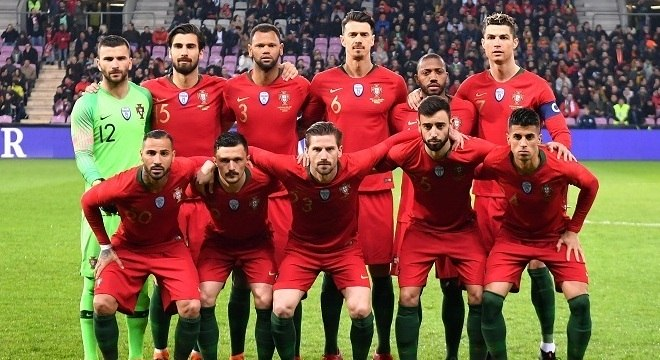

- CURIOSIDADE
A Selecção Portuguesa de Futebol é a equipa nacional de Portugal e representa o país nas competições internacionais de futebol. É gerida pela Federação Portuguesa de Futebol.
A selecção estreou-se oficialmente a 18 de dezembro de 1921 (há 100 anos, 9 meses e 14 dias) contra a Espanha, jogo que acabou 3-1 a favor dos espanhóis. A primeira vitória foi obtida a 18 de junho de 1925, contra a Itália, por 1-0. A estreia de Portugal na fase final de uma grande competição deu-se em 1966, onde a Seleção das Quinas chegou às meias-finais do Mundial da FIFA, onde seria vencida pela equipa anfitriã, e futura campeã, a Inglaterra. Portugal terminou o torneio em terceiro lugar, após vencer a União Soviética.
Portugal chegou pela primeira vez à fase final de um Campeonato da Europa em 1984, chegando às meias finais e perdeu contra o anfitrião do torneio e futuro campeão, França.
Durante várias décadas, a selecção portuguesa não fez parte de um grupo de equipas candidactas a vencer títulos. No entanto, a equipa portuguesa evoluiu, sendo presença constante em quase todas as fases finais de grandes torneios a partir do início do século XXI, fruto da presença na equipa de vários jogadores de classe mundial (incluindo dois vencedores da Bola de Ouro), que representam regularmente os principais clubes europeus. A aposta dos três grandes clubes portugueses - Sporting, Benfica e Porto - na formação de jogadores tem também beneficiado a seleção, cuja média de idades tem vindo a descer.
O PRIMEIRO GRANDE TITULO:
O primeiro grande título da equipa portuguesa foi conquistado em 2016, quando os portugueses venceram a final do Campeonato da Europa frente à anfitriã França, após vitória no prolongamento. 3 anos depois, os portugueses venceram a primeira edição da Liga das Nações da UEFA, após disputarem a final da competição contra a Holanda no Estádio do Dragão. Até 2016, a sua melhor prestação em grandes torneios fora a presença na final do Euro 2004, competição da qual foi país anfitrião e que perdeu frente à Grécia. Portugal chegou também à final da Taça Independência em 1972, que perdeu contra o Brasil, e venceu a Skydome Cup em 1995, o seu único troféu a nível sénior até 2016.
HISTÓRIA DE PORTUGAL EM COPAS:
Seleção Portuguesa participou de sete copas (1966, 1986, 2002, 2006, 2010, 2014 e 2018) e vai para a sua oitava no fim de 2022. Dessas disputas, em três ficou na fase de grupos (1986, 2002 e 2014). Logo, a estatística segue favorável para a seleção Portuguesa que de sete participações, em quatro superou a primeira fase, isto é, 60% de aproveitamento neste quesito.
Obviamente que todos querem ganhar, mas Portugal ainda não chegou em uma final de Copa do Mundo. Portanto, dado o contexto português, é uma boa estatística. Confira a seguir suas melhores campanhas. Até hoje, 1966 é o auge em copas do Mundo para Portugal, tendo como seu maior standard a Pantera Negra Eusébio que foi o bota de ouro da competição com nove gols. A saber, foram seis jogos, cinco vitórias e uma derrota para a Inglaterra, futura campeã na época.
Por curiosidade, a seleção de Portugal venceu o Brasil, atual campeão da época, por 3 x 1 na fase de grupos. Com dois gols de Eusébio mesmo tendo Pelé em campo e Garrincha no banco. No fim, a derrota para Portugal foi determinante para a eliminação do Brasil ainda na fase de grupos, pois este confronto aconteceu na última rodada da primeira fase.
De fato, não existia oitavas de final. Logo, Portugal venceu com a Pantera Negra anotando um Poker (quatro gols) nos 5 x 3 contra a Coreia do Norte nas quartas de final. Contudo, o auge terminou nas semis frente a Inglaterra de Sir Bobby Charlton. A saber, Charlton não havia marcado um gol desde a fase de grupos, mas apareceu quando talvez seu País mais precisou, anotando os dois gols na vitória por 2 x 1. Em suma, Eusébio deu esperanças após seu gol aos 82′, mas o placar não mudou.
TOP 5 MAIORES ÍDOLOS DA SELEÇÃO PORTUGUESA
Cristiano Ronaldo. Cristiano Ronaldo nasceu no Funchal em 1985 e aos 10 anos de idade foi para o Clube. ...
Eusébio. Eusébio, o “Pantera Negra”, foi para muitos considerado um dos melhores futebolistas do mundo. ...
Luís Figo. ...
Pauleta. ...
Paulo Futre. ...
Mário Coluna. ...
Vítor Baía. ...
Deco.
